28 components (28 approved, 0 candidates), built 2026-11-07, gallery 2026-11-07.
Every still is the component at a telling moment; Play loops it in the browser (a clock drives the same timeline HyperFrames seeks frame by frame in a render).
The numbers behind each move are in styles/paper-cards/vocabulary.md and tokens.json; the measurements are in frame-match.md.
To change a look or a timing, edit the component in motion-lib/compositions/, then run bash pipeline/bin/frame-match and bash pipeline/bin/gallery.
Since M14 every component lives through the four phases of the Motion and energy rules (main animation, inertia, hold, exit; motion-lib/assets/pc-motion.js) and the energy line shows what it measures rendered alone for 4 s (python pipeline/lib/review energy measures a whole reel).
card stat-number end-card mascot dark-chip light-chip caption-line pop check-badge window-card terminal-card chart-card thumb-grid logo-tile strike-through fly-in chat-card progress-bar camera-move headline exit-move handwritten-callout speech-bubble table-card dm-card hero-3d icon-3d paper-canvas
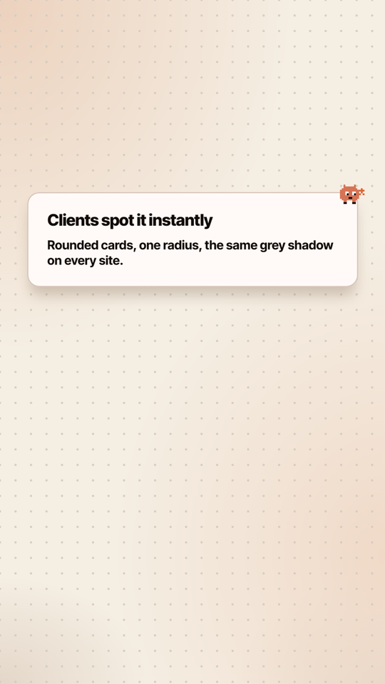
A surface card with an optional title, body and image. The default move for anything new: opacity 0 to 1 over 5 frames, y +38 to 0 over 8 frames, expo.out.
Frame match: pass, 10/10 checks, strip r 0.938. Energy (alone, 4 s): moving 7.7 percent of frames, middle band 12.3 percent, pixels changing 0.49 percent, longest still 3.9 s, static windows 0. Beat types: hook, stake, number, tool, step, comparison, proof, mechanism, before-after, pain-payoff, payoff. File: compositions/card.html
| prop | type | default | label |
|---|---|---|---|
x | number | 90 | Left (px) |
y | number | 560 | Top (px) |
w | number | 900 | Width (px) |
h | number | 0 | Height (px, 0 = auto) |
title | string | "Clients spot it instantly" | Title |
body | string | "Rounded cards, one radius, the same grey shadow on every site." | Body text |
image | string | "" | Image path (assets/...), optional |
image_h | number | 520 | Image height (px) |
align | enum | "left" | Text align |
enter | enum | "rise" | Entrance |
enter_at | number | 0 | Entrance at (s) |
rise | number | 38 | Rise distance (px) |
hold | enum | "normal" | Hold level (the steady motion after the entrance) |
exit | enum | "none" | Exit |
exit_at | number | -1 | Exit at (s, -1 = never) |
mascot | string | "" | Mascot prop (empty = none): clapper, star, film, play, grid, check |
mascot_corner | enum | "top-right" | Mascot corner |
honesty | enum | "none" | Honesty label |
tilt | number | 0 | Tilt (degrees) |
Demo props: {"mascot": "star", "exit": "fade-blur", "exit_at": 2.6}
enter at frame 0: cue hero_enter (only when the card is the scene's hero)land at frame 8: no sound of its ownmascot at frame 12: no sound of its own (when the mascot prop is set)exit at frame exit_at x 30: cue transition (when exit is set)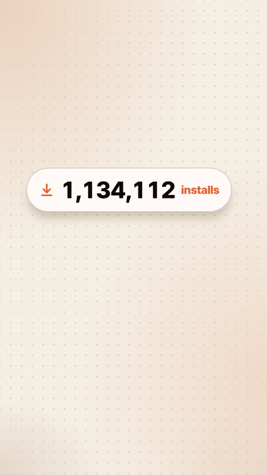
A number that proves the point, counting from 0 with ease-out over 27.5 frames after its pill (168 tall, icon, unit in accent) or chip (141 tall, serif unit, sub-label) entered.
Frame match: pass, 9/9 checks, strip r 0.939. Energy (alone, 4 s): moving 14.6 percent of frames, middle band 23.1 percent, pixels changing 0.32 percent, longest still 3.23 s, static windows 0. Beat types: hook, number, proof, payoff. File: compositions/stat-number.html
| prop | type | default | label |
|---|---|---|---|
x | number | 120 | Left (px) |
y | number | 700 | Top (px) |
value | number | 1134112 | The number |
decimals | number | 0 | Decimals |
prefix | string | "" | Prefix |
suffix | string | "" | Suffix (after the digits) |
unit | string | "installs" | Unit word |
container | enum | "pill" | Container |
icon | enum | "none" | Icon (pill) |
sub_label | string | "" | Sub label (chip) |
enter_at | number | 0 | Enter at (s) |
count_frames | number | 27.5 | Count-up frames |
count_delay_frames | number | 0 | Frames after the landing before the count starts |
honesty | enum | "none" | Honesty label |
hold | enum | "normal" | Hold level (the steady motion after the entrance) |
exit | enum | "none" | Exit |
exit_at | number | -1 | Exit at (s, -1 = never) |
Demo props: {"icon": "download"}
enter at frame 0: cue hero_enter (a giant number is a hero)land at frame 8: no sound of its owncount_start at frame 8 + count_delay_frames: cue numbercount_end at frame 8 + count_delay_frames + count_frames: no sound of its own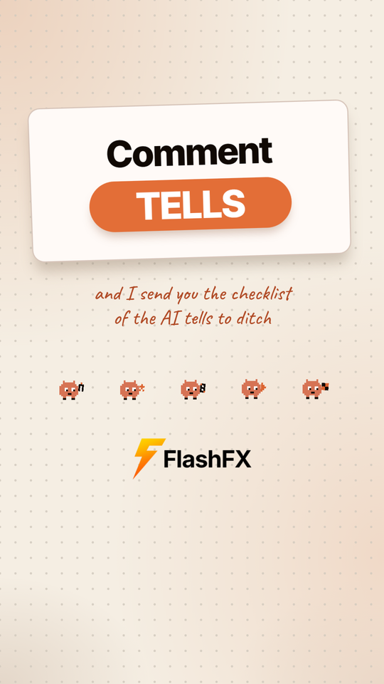
The CTA: a tilted surface card with the verb and the keyword pill (typed, 2 frames per letter), two handwritten lines, five mascots walking in, the FlashFX lockup under them (at least 300 px wide). Elements fade in over 6 frames, 6 apart, top to bottom; the card wobbles slightly.
Frame match: pass, 11/11 checks, strip r 0.974. Energy (alone, 4 s): moving 13.1 percent of frames, middle band 13.8 percent, pixels changing 0.64 percent, longest still 3.0 s, static windows 0. Beat types: ask. File: compositions/end-card.html
| prop | type | default | label |
|---|---|---|---|
verb | string | "Comment" | Verb line |
keyword | string | "TELLS" | Keyword (typed into the pill) |
line1 | string | "and I send you the checklist" | Handwritten line 1 |
line2 | string | "of the AI tells to ditch" | Handwritten line 2 |
mascots_json | string | "[\"clapper\",\"star\",\"film\",\"play\",\"grid\"]" | The five mascot props as JSON |
lockup | string | "" | FlashFX lockup image (assets/brand/lockup/...), placed under the mascots |
lockup_w | number | 360 | Lockup width (px, at least 300) |
lockup_y | number | 1230 | Lockup top (px) |
enter_at | number | 0 | Build starts (s) |
fade_frames | number | 6 | Fade frames per element |
stagger_frames | number | 6 | Frames between elements |
type_frames | number | 2 | Frames per typed letter |
wobble | boolean | true | The card wobbles slightly (v02) |
hold | enum | "calm" | Hold level (the steady motion while the card holds) |
Demo props: {"lockup": "assets/brand/lockup/lockup-gradient-on-light.png"}
enter at frame 0: cue hero_enterland at frame 6: no sound of its owntyping at frame 2 x stagger_frames + fade_frames (18) for len(keyword) x type_frames frames: cue typingmascots at frame 4 x stagger_frames (24): no sound of its ownlockup at frame after the typing: no sound of its own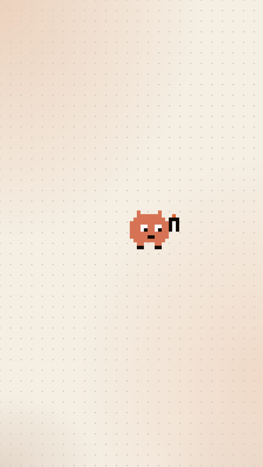
The recurring pixel creature (85 x 58) with one prop, perched on a corner of the scene's main element; enters 4 frames after the card lands, rising over 4 frames; hops, pops or walks on the end card.
Frame match: pass, 4/4 checks, strip r 0.981. Energy (alone, 4 s): moving 0.0 percent of frames, middle band 1.5 percent, pixels changing 0.11 percent, longest still 4.33 s, static windows 0. Beat types: any. File: compositions/mascot.html
| prop | type | default | label |
|---|---|---|---|
x | number | 880 | Left (px) |
y | number | 520 | Top (px) |
prop | enum | "clapper" | Prop |
move | enum | "rise" | Entrance |
enter_at | number | 0 | Enter at (s) |
frames | number | 4 | Entrance frames |
scale | number | 1 | Scale (1 = 85 x 58 px) |
flip | boolean | false | Face left |
hold | enum | "normal" | Hold level (the steady motion after the entrance) |
exit | enum | "none" | Exit |
exit_at | number | -1 | Exit at (s, -1 = never) |
Demo props: {"x": 500, "y": 900, "scale": 3, "move": "hop", "enter_at": 0.3}
mascot at frame 0: no sound of its own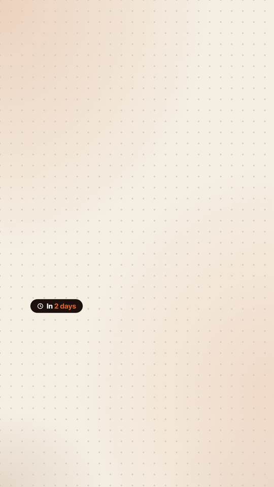
A short fact or label attached to a card: ink-chip fill, white text with one accent word, 55 tall; pops in over 3 frames.
Frame match: pass, 6/6 checks, strip r 0.955. Energy (alone, 4 s): moving 0.0 percent of frames, middle band 2.3 percent, pixels changing 0.02 percent, longest still 4.33 s, static windows 98. Beat types: stake, number, tool, step, comparison, proof, mechanism, pain-payoff, payoff. File: compositions/dark-chip.html
| prop | type | default | label |
|---|---|---|---|
x | number | 120 | Left (px) |
y | number | 1180 | Top (px) |
text | string | "In 2 days" | Text |
accent_word | string | "2 days" | The accent word (must appear in the text) |
icon | enum | "none" | Icon |
enter_at | number | 0 | Pop at (s) |
pop_frames | number | 3 | Pop frames |
hold | enum | "normal" | Hold level (the steady motion after the pop) |
exit | enum | "none" | Exit |
exit_at | number | -1 | Exit at (s, -1 = never) |
tilt | number | 0 | Tilt (degrees) |
Demo props: {"icon": "clock", "enter_at": 0.3}
pop at frame 0: cue ui_click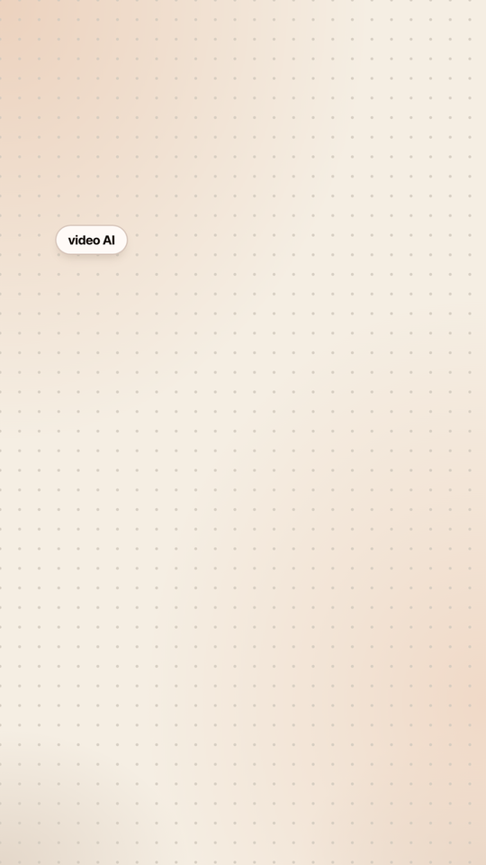
A label inside or above a card: surface fill, ink text, 67 tall; fades in over 4 frames with a small drift.
Frame match: pass, 4/4 checks, strip r 0.963. Energy (alone, 4 s): moving 0.0 percent of frames, middle band 0.0 percent, pixels changing 0.02 percent, longest still 4.33 s, static windows 81. Beat types: stake, number, tool, step, comparison, mechanism, before-after, pain-payoff, payoff. File: compositions/light-chip.html
| prop | type | default | label |
|---|---|---|---|
x | number | 120 | Left (px) |
y | number | 500 | Top (px) |
text | string | "video AI" | Text |
enter_at | number | 0 | Enter at (s) |
fade_frames | number | 4 | Fade frames |
drift | number | 10 | Drift distance (px) |
hold | enum | "normal" | Hold level (the steady motion after the entrance) |
exit | enum | "none" | Exit |
exit_at | number | -1 | Exit at (s, -1 = never) |
Demo props: {"enter_at": 0.3}
enter at frame 0: cue ui_click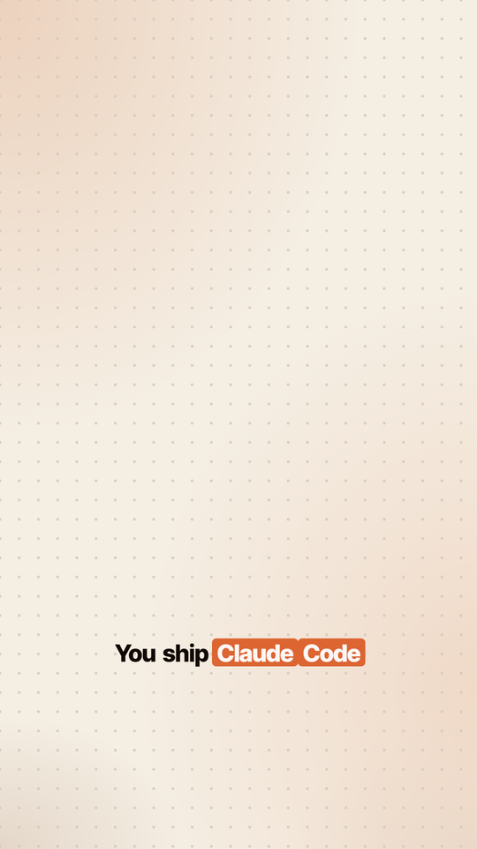
The spoken words, one chunk of 1 to 4 words at a time, bare ink words centered at the style's caption position (tokens.json zones.caption.center_y, 1332 since 2026-11-07; the y prop overrides it), at most 620 px wide; each word fades in over 4 frames when spoken, emphasis words on accent boxes rising 9 px; the old chunk fades out over 2 frames, the next word on the following frame. Mounted once per reel over the body beats.
Frame match: pass, 6/6 checks, strip r 0.972. Energy (alone, 4 s): moving 0.0 percent of frames, middle band 0.0 percent, pixels changing 0.09 percent, longest still 4.33 s, static windows 32. Beat types: any. File: compositions/caption-line.html
| prop | type | default | label |
|---|---|---|---|
chunks_json | string | "[{\"start\":0.2,\"end\":1.4,\"words\":[{\"w\":\"You\",\"t\":0.2},{\"w\":\"ship\",\"t\":0.45},{\"w\":\"Claude\",\"t\":0.7,\"em\":true},{\"w\":\"Code\",\"t\":0.95,\"em\":true}]},{\"start\":1.45,\"end\":2.9,\"words\":[{\"w\":\"client\",\"t\":1.45},{\"w\":\"sites.\",\"t\":1.8}]}]" | Caption chunks as JSON: [{"start":s,"end":s,"words":[{"w":"You","t":s,"em":false}, ...]}, ...] (times local to this clip) |
y | number | 0 | Cap center y (px; 0 = the caption position of the style, tokens.css --caption-y) |
max_w | number | 620 | Widest line (px) |
word_frames | number | 4 | Word fade frames |
box_frames | number | 4 | Emphasis box fade frames |
box_rise | number | 9 | Emphasis box rise (px) |
out_frames | number | 2 | Chunk fade-out frames |
hold | enum | "normal" | Hold level (the chunk drifts upward while it is on screen) |
Demo props: {}
caption_word at frame each word's time: no sound of its owncaption_chunk at frame each chunk's start: no sound of its own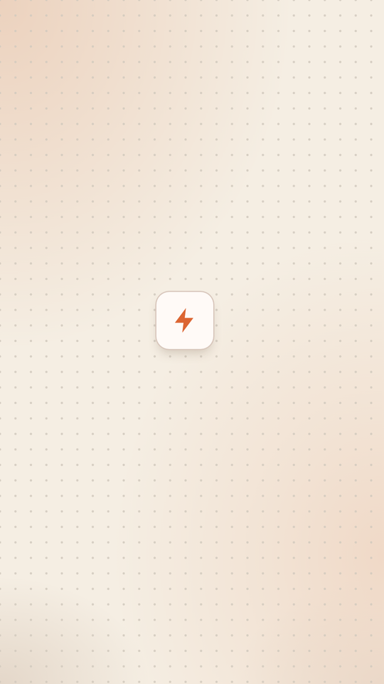
Brings small things in with a little spring: a keyword pill, a badge, a tile, a chip. Scale from 0.5 to a peak (13 to 16 percent for icons and badges, 1 to 3 percent for pills and cards) then back to 1 over 3 to 15 frames; opacity reaches 1 within 4 frames.
Frame match: pass, 6/6 checks, strip r 0.976. Energy (alone, 4 s): moving 0.0 percent of frames, middle band 0.0 percent, pixels changing 0.02 percent, longest still 4.33 s, static windows 92. Beat types: any. File: compositions/pop.html
| prop | type | default | label |
|---|---|---|---|
x | number | 440 | Left (px) |
y | number | 820 | Top (px) |
kind | enum | "pill" | What pops |
text | string | "LINK" | Text (pill, chip) |
icon | enum | "star" | Icon (badge, tile) |
size | number | 160 | Badge or tile size (px) |
overshoot | number | 0.02 | Overshoot (0.02 pills and cards, 0.13 to 0.16 icons and badges) |
frames | number | 7 | Pop frames (3 to 15) |
enter_at | number | 0 | Pop at (s) |
hold | enum | "normal" | Hold level (the steady motion after the pop) |
exit | enum | "none" | Exit |
exit_at | number | -1 | Exit at (s, -1 = never) |
Demo props: {"kind": "tile", "icon": "bolt", "overshoot": 0.13, "frames": 14, "enter_at": 0.3}
pop at frame 0: cue ui_clickpop_peak at frame round(frames x 0.55): no sound of its own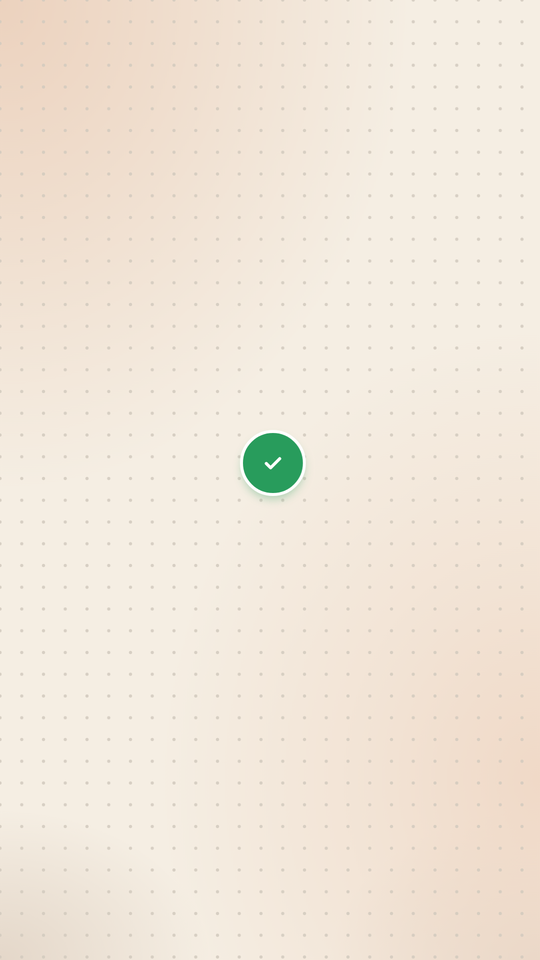
Marks done or yes: a success circle with a white check and a white ring that pops (16 percent, 12 frames), or a checklist card whose ticks pop 3 frames each, 4 frames apart.
Frame match: pass, 6/6 checks, strip r 0.98. Energy (alone, 4 s): moving 0.0 percent of frames, middle band 1.5 percent, pixels changing 0.03 percent, longest still 4.33 s, static windows 71. Beat types: step, proof, mechanism, pain-payoff, payoff. File: compositions/check-badge.html
| prop | type | default | label |
|---|---|---|---|
mode | enum | "badge" | Badge or checklist |
x | number | 498 | Left (px) |
y | number | 860 | Top (px) |
size | number | 84 | Badge size (px) |
w | number | 760 | List card width (px) |
items_json | string | "[\"Plan the palette\",\"Review the layout\",\"Then code\"]" | Checklist items as JSON |
tick_frames | number | 3 | Frames per tick |
tick_gap_frames | number | 4 | Frames between ticks |
overshoot | number | 0.16 | Badge pop overshoot |
pop_frames | number | 12 | Badge pop frames |
enter_at | number | 0 | Enter at (s) |
ticks_at | number | 0.4 | First tick at (s, list mode) |
hold | enum | "normal" | Hold level (the steady motion after the entrance) |
exit | enum | "none" | Exit |
exit_at | number | -1 | Exit at (s, -1 = never) |
Demo props: {"size": 120, "x": 480, "enter_at": 0.3}
check at frame 0: cue success (list mode: one per tick, ticks_at then 4 frames apart)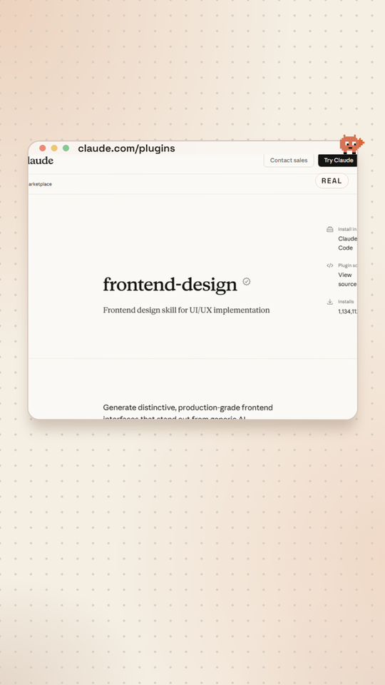
Shows the tool or a site: a card with a surface-chrome title bar and 3 dots, the content a real screenshot (research assets) or text lines; light or dark. Card enter, or a fly-in from below.
Frame match: pass, 9/9 checks, strip r 0.965. Energy (alone, 4 s): moving 96.2 percent of frames, middle band 96.9 percent, pixels changing 2.74 percent, longest still 0.03 s, static windows 0. Beat types: hook, stake, tool, step, comparison, proof, mechanism, before-after, pain-payoff, payoff. File: compositions/window-card.html
| prop | type | default | label |
|---|---|---|---|
x | number | 90 | Left (px) |
y | number | 420 | Top (px) |
w | number | 900 | Width (px) |
h | number | 760 | Height (px) |
title | string | "claude.com/plugins" | Title bar text (a site or app name) |
kind | enum | "light" | Light or dark window |
image | string | "" | Content image (a research screenshot under assets/...) |
image_fit | enum | "cover-top" | Image fit |
lines_json | string | "[]" | Text lines as JSON when there is no image |
enter | enum | "rise" | Entrance |
enter_at | number | 0 | Enter at (s) |
mascot | string | "" | Mascot prop on the top-right corner (empty = none) |
honesty | enum | "none" | Honesty label |
scroll_px_s | number | 30 | The screenshot scrolls inside the window at this speed (px per second; 0 = still) |
hold | enum | "normal" | Hold level (the steady motion after the entrance) |
exit | enum | "none" | Exit |
exit_at | number | -1 | Exit at (s, -1 = never) |
Demo props: {"image": "assets/demo/plugin-page.png", "mascot": "play", "honesty": "sourced"}
enter at frame 0: cue hero_enterland at frame 8 (rise) or 16 (fly-in): no sound of its ownmascot at frame land + 4: no sound of its own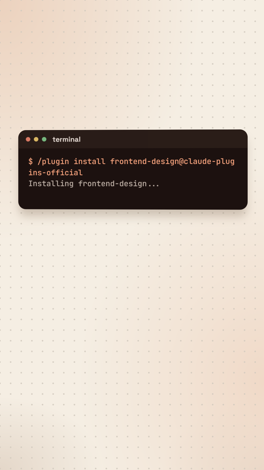
The prompt or the code being written: a dark window card with colored mono text; lines appear one by one, typed at 2 characters per frame or whole.
Frame match: pass, 9/9 checks, strip r 0.981. Energy (alone, 4 s): moving 10.0 percent of frames, middle band 11.5 percent, pixels changing 0.75 percent, longest still 3.03 s, static windows 0. Beat types: step, mechanism. File: compositions/terminal-card.html
| prop | type | default | label |
|---|---|---|---|
x | number | 90 | Left (px) |
y | number | 560 | Top (px) |
w | number | 900 | Width (px) |
h | number | 0 | Height (px, 0 = auto) |
title | string | "terminal" | Title bar text |
lines_json | string | "[{\"text\":\"/plugin install frontend-design@claude-plugins-official\",\"color\":\"accent\"},{\"text\":\"Installing frontend-design...\",\"color\":\"muted\"},{\"text\":\"Installed. Scope: user\",\"color\":\"success\"}]" | Lines as JSON: [{"text":"$ /plugin install ...","color":"paper|accent|success|muted"}] |
mode | enum | "type" | Typing or lines |
chars_per_frame | number | 2 | Typed characters per frame (type mode) |
line_gap_frames | number | 6 | Frames between lines |
start_delay_frames | number | 8 | Frames after the card lands before the first line |
prompt | string | "$ " | Prompt sign before the first line |
font_px | number | 30 | Mono font size (px) |
enter_at | number | 0 | Enter at (s) |
honesty | enum | "none" | Honesty label |
hold | enum | "normal" | Hold level (the steady motion after the entrance) |
exit | enum | "none" | Exit |
exit_at | number | -1 | Exit at (s, -1 = never) |
Demo props: {}
enter at frame 0: cue hero_enterland at frame 8: no sound of its owntyping at frame 8 + start_delay_frames, then line by line for chars / chars_per_frame frames: cue typing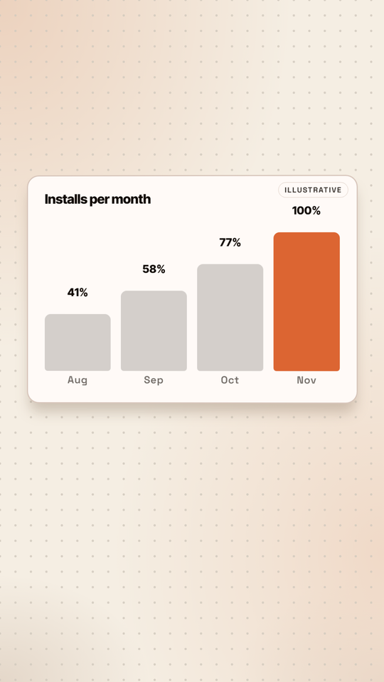
Data as bars (grow over 12 frames, 2 apart, the value fades in as its bar ends; the highlight bar in accent) or a gauge (arc and number over 23 frames). Mock data carries the honesty label.
Frame match: pass, 13/13 checks, strip r 0.986. Energy (alone, 4 s): moving 12.3 percent of frames, middle band 16.9 percent, pixels changing 0.56 percent, longest still 3.7 s, static windows 0. Beat types: number, comparison, proof, mechanism, before-after. File: compositions/chart-card.html
| prop | type | default | label |
|---|---|---|---|
x | number | 90 | Left (px) |
y | number | 520 | Top (px) |
w | number | 900 | Width (px) |
h | number | 620 | Height (px) |
title | string | "Installs per month" | Title |
kind | enum | "bars" | Bars or gauge |
values_json | string | "[{\"label\":\"Aug\",\"value\":41},{\"label\":\"Sep\",\"value\":58},{\"label\":\"Oct\",\"value\":77},{\"label\":\"Nov\",\"value\":100,\"highlight\":true}]" | Bars as JSON: [{"label":"Jan","value":12,"highlight":false}] |
max | number | 0 | Scale maximum (0 = the largest value) |
unit | string | "%" | Unit after the values |
gauge_value | number | 72 | Gauge value (0 to 100) |
bar_frames | number | 12 | Bar growth frames |
bar_gap_frames | number | 2 | Frames between bars |
value_fade_frames | number | 2 | Value label fade frames |
gauge_frames | number | 23 | Gauge frames |
enter_at | number | 0 | Enter at (s) |
honesty | enum | "mock" | Honesty label |
hold | enum | "normal" | Hold level (the steady motion after the entrance) |
exit | enum | "none" | Exit |
exit_at | number | -1 | Exit at (s, -1 = never) |
Demo props: {}
enter at frame 0: cue hero_enterbar at frame 8 + 2 x i for 12 frames: no sound of its owngauge at frame 8 for 23 frames: cue number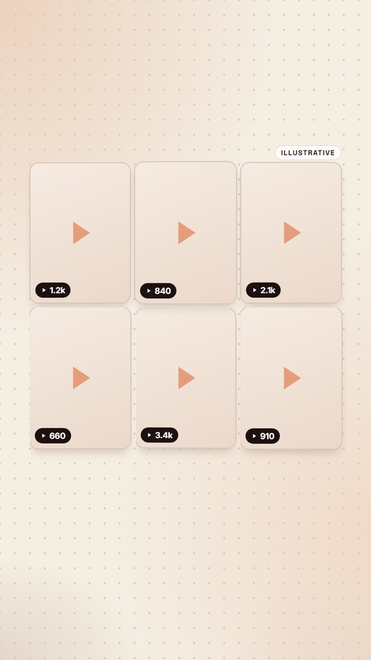
Many examples at once: a grid of thumbnail cards (images or placeholders) with small count chips; cards build 4 frames each, 1 frame apart in a row, rows 7 frames apart.
Frame match: pass, 9/9 checks, strip r 0.974. Energy (alone, 4 s): moving 6.2 percent of frames, middle band 14.6 percent, pixels changing 0.24 percent, longest still 3.93 s, static windows 0. Beat types: stake, tool, comparison, mechanism, before-after. File: compositions/thumb-grid.html
| prop | type | default | label |
|---|---|---|---|
x | number | 90 | Left (px) |
y | number | 480 | Top (px) |
w | number | 900 | Width (px) |
cols | number | 3 | Columns |
gap | number | 18 | Gap (px) |
ratio | number | 1.4 | Card height over width |
items_json | string | "[{\"count\":\"1.2k\"},{\"count\":\"840\"},{\"count\":\"2.1k\"},{\"count\":\"660\"},{\"count\":\"3.4k\"},{\"count\":\"910\"}]" | Items as JSON: [{"image":"assets/...","label":"","count":"1.2k"}] (no image = a placeholder card) |
card_frames | number | 4 | Frames per card (fade while rising) |
stagger_frames | number | 1 | Frames between cards in a row |
row_gap_frames | number | 7 | Frames between rows |
enter_at | number | 0 | Build starts (s) |
honesty | enum | "mock" | Honesty label |
hold | enum | "normal" | Hold level (the grid drifts and turns as one group) |
exit | enum | "none" | Exit |
exit_at | number | -1 | Exit at (s, -1 = never) |
Demo props: {}
card at frame row x 7 + col: no sound of its own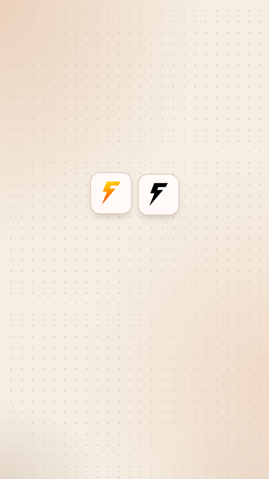
Names the tool or brand: a surface rounded square or circle badge holding a logo image file with its aspect ratio locked (brand.json or a research asset; a neutral icon when there is none). Pops with 13 percent overshoot over 14 frames; a second tile slides in from the left over 9 frames with a 6 px overshoot.
Frame match: pass, 10/10 checks, strip r 0.888. Energy (alone, 4 s): moving 0.0 percent of frames, middle band 3.1 percent, pixels changing 0.07 percent, longest still 4.33 s, static windows 52. Beat types: hook, tool. File: compositions/logo-tile.html
| prop | type | default | label |
|---|---|---|---|
x | number | 460 | Left (px) |
y | number | 700 | Top (px) |
size | number | 160 | Tile size (px) |
shape | enum | "tile" | Rounded square tile (v02) or circle badge (v01) |
image | string | "" | Logo image (assets/brand/... from brand.json, or a research asset); empty = the neutral icon |
image_pad | number | 30 | Padding around the logo (px) |
second_image | string | "" | A second tile sliding in from the left (image path, optional) |
overshoot | number | 0.13 | Pop overshoot (0.13 tiles, 0.16 badges) |
frames | number | 14 | Pop frames |
enter_at | number | 0 | Pop at (s) |
hold | enum | "normal" | Hold level (the steady motion after the pop) |
exit | enum | "none" | Exit |
exit_at | number | -1 | Exit at (s, -1 = never) |
Demo props: {"image": "assets/brand/mark/mark-gradient.png", "second_image": "assets/brand/mark/mark-black.png", "x": 366, "enter_at": 0.2}
pop at frame 0: cue hero_enterslide at frame 17: cue ui_click (when second_image is set)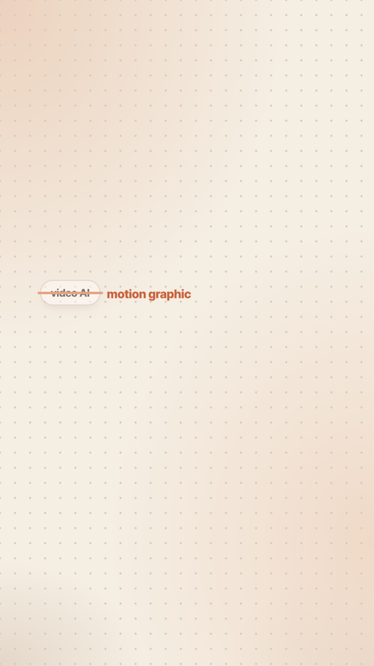
Not X, before and after: a line drawn across a chip or text over 4 frames, or an X as two strokes of 6 frames, 6 apart; a replacement types in after it.
Frame match: pass, 5/5 checks, strip r 0.98. Energy (alone, 4 s): moving 0.0 percent of frames, middle band 0.0 percent, pixels changing 0.02 percent, longest still 4.33 s, static windows 65. Beat types: stake, comparison, before-after, pain-payoff. File: compositions/strike-through.html
| prop | type | default | label |
|---|---|---|---|
x | number | 120 | Left (px) |
y | number | 820 | Top (px) |
text | string | "video AI" | The text that gets struck |
style | enum | "line" | A line or an X |
chip | boolean | true | The text sits in a light chip |
font_px | number | 48 | Font size without a chip (px) |
replacement | string | "motion graphics" | Replacement typed after the strike (optional) |
enter_at | number | 0 | Text enters at (s) |
strike_at | number | 0.5 | Strike at (s) |
line_frames | number | 4 | Line frames |
x_frames | number | 6 | Frames per X stroke |
x_gap_frames | number | 6 | Frames between the X strokes |
replace_frames_per_char | number | 2 | Frames per typed character of the replacement |
hold | enum | "normal" | Hold level (the steady motion after the entrance) |
exit | enum | "none" | Exit |
exit_at | number | -1 | Exit at (s, -1 = never) |
Demo props: {}
enter at frame 0: no sound of its ownstrike at frame strike_at x 30: cue negativetyping at frame strike + line_frames + 2: cue typing (when a replacement is set)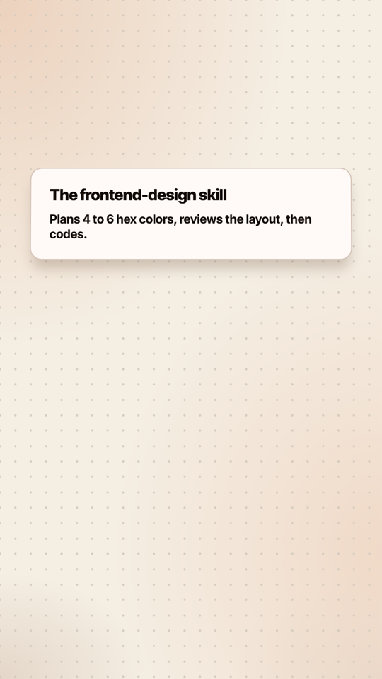
A big entrance for a hero card: travels 414 to 930 px from below, half below or a side over 11 to 16 frames, expo.out, the start tilt easing to 0, no overshoot.
Frame match: pass, 7/7 checks, strip r 0.983. Energy (alone, 4 s): moving 9.2 percent of frames, middle band 9.2 percent, pixels changing 1.11 percent, longest still 3.93 s, static windows 0. Beat types: any, hook. File: compositions/fly-in.html
| prop | type | default | label |
|---|---|---|---|
x | number | 90 | Left (px) |
y | number | 480 | Top (px) |
w | number | 900 | Width (px) |
h | number | 0 | Height (px, 0 = auto) |
from | enum | "bottom" | Parked spot |
distance | number | 930 | Travel distance (px, 414 to 930) |
frames | number | 14 | Frames (11 to 16) |
tilt | number | 3.9 | Start tilt (degrees, 2.4 to 3.9) |
end_tilt | number | 0 | End tilt (degrees, 0 to 1.4) |
title | string | "The frontend-design skill" | Title |
body | string | "Plans 4 to 6 hex colors, reviews the layout, then codes." | Body text |
image | string | "" | Image (assets/..., optional) |
image_h | number | 520 | Image height (px) |
enter_at | number | 0 | Fly in at (s) |
mascot | string | "" | Mascot prop on the top-right corner (empty = none) |
hold | enum | "normal" | Hold level (the steady motion after the landing) |
exit | enum | "none" | Exit |
exit_at | number | -1 | Exit at (s, -1 = never) |
Demo props: {"mascot": "film", "enter_at": 0.2}
enter at frame 0: cue hero_enterland at frame frames (14): no sound of its ownmascot at frame frames + 4: no sound of its own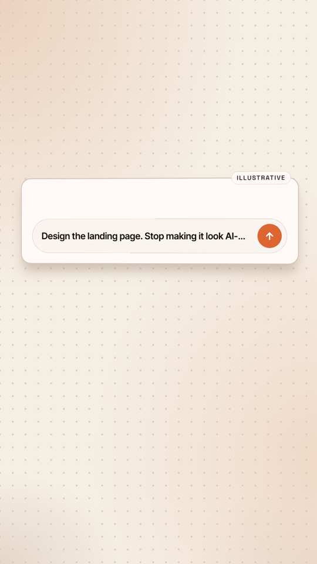
A prompt being sent: a surface card with an input bar and a send button. The text types at 1.15 frames per character; the button turns from gray to accent over 2 frames, 3 frames after the last character; an optional reply bubble follows.
Frame match: pass, 10/10 checks, strip r 0.959. Energy (alone, 4 s): moving 0.0 percent of frames, middle band 10.8 percent, pixels changing 0.28 percent, longest still 4.33 s, static windows 0. Beat types: step. File: compositions/chat-card.html
| prop | type | default | label |
|---|---|---|---|
x | number | 90 | Left (px) |
y | number | 640 | Top (px) |
w | number | 900 | Width (px) |
prompt | string | "Design the landing page. Stop making it look AI-made." | The prompt typed into the input bar |
placeholder | string | "Message Claude" | Placeholder before typing |
reply | string | "Planning the palette first: 4 to 6 hex colors." | A reply bubble after send (optional) |
frames_per_char | number | 1.15 | Frames per typed character (chat: 1.15) |
send_delay_frames | number | 3 | Frames after the last character before the send button turns accent |
send_frames | number | 2 | Frames the button takes to turn accent |
reply_delay_frames | number | 10 | Frames after send before the reply bubble |
enter_at | number | 0 | Enter at (s) |
type_at | number | 0.4 | Typing starts (s, after the card landed) |
honesty | enum | "mock" | Honesty label |
hold | enum | "normal" | Hold level (the steady motion after the entrance) |
exit | enum | "none" | Exit |
exit_at | number | -1 | Exit at (s, -1 = never) |
Demo props: {}
enter at frame 0: cue hero_entertyping at frame type_at x 30 for chars x 1.15 frames: cue typingsend at frame typing end + 3: cue ui_clickreply at frame send + 10: no sound of its own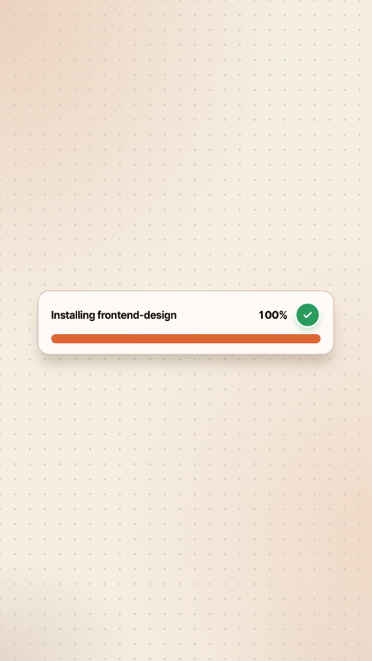
Something finishing or a usage value: the bar fills over 6 frames (the percent counts with it), then a check badge pops over 3 frames.
Frame match: pass, 13/13 checks, strip r 0.827. Energy (alone, 4 s): moving 0.8 percent of frames, middle band 16.2 percent, pixels changing 0.26 percent, longest still 3.8 s, static windows 0. Beat types: number, step, payoff. File: compositions/progress-bar.html
| prop | type | default | label |
|---|---|---|---|
x | number | 120 | Left (px) |
y | number | 860 | Top (px) |
w | number | 840 | Width (px) |
label | string | "Installing frontend-design" | Label above the bar |
value | number | 100 | Fill percent (0 to 100) |
in_card | boolean | true | Inside a surface card |
fill_frames | number | 6 | Fill frames |
check | boolean | true | A check badge pops when the bar is full |
check_frames | number | 3 | Check pop frames |
enter_at | number | 0 | Enter at (s) |
fill_at | number | 0.5 | Fill starts (s) |
hold | enum | "normal" | Hold level (the steady motion after the entrance) |
exit | enum | "none" | Exit |
exit_at | number | -1 | Exit at (s, -1 = never) |
Demo props: {}
enter at frame 0: no sound of its ownfill at frame fill_at x 30 for 6 frames: cue numbercheck at frame fill + 5: cue success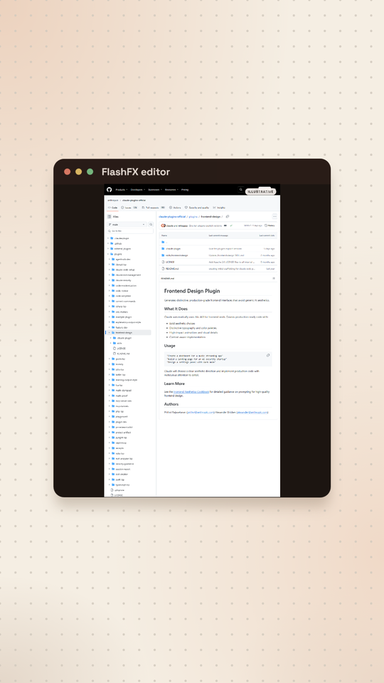
Reveals context or dives in: the whole scene content shrinks into an app window over 8 frames ease-out (pull-back), or grows out of it over 20 frames ease-in-out (zoom). The caption layer does not move.
Frame match: pass, 4/4 checks, strip r 0.899. Energy (alone, 4 s): moving 6.9 percent of frames, middle band 7.7 percent, pixels changing 1.93 percent, longest still 3.43 s, static windows 0. Beat types: any, tool. File: compositions/camera-move.html
| prop | type | default | label |
|---|---|---|---|
kind | enum | "pullback" | Pull-back into a window, or zoom into one card |
image | string | "" | The scene content as an image (assets/...); empty = a placeholder card |
title | string | "FlashFX editor" | Title bar of the app window the scene shrinks into |
frames | number | 8 | Move frames (8 pull-back ease-out, v02; 20 zoom ease-in-out, v05) |
at | number | 0.6 | Move starts (s) |
x | number | 150 | End window left (px) |
y | number | 520 | End window top (px) |
w | number | 780 | End window width (px) |
h | number | 880 | End window height (px) |
honesty | enum | "mock" | Honesty label |
hold | enum | "normal" | Hold level (the steady motion after the move) |
exit | enum | "none" | Exit |
exit_at | number | -1 | Exit at (s, -1 = never) |
Demo props: {"image": "assets/demo/repo.png"}
camera at frame at x 30 for frames frames: cue transition_slow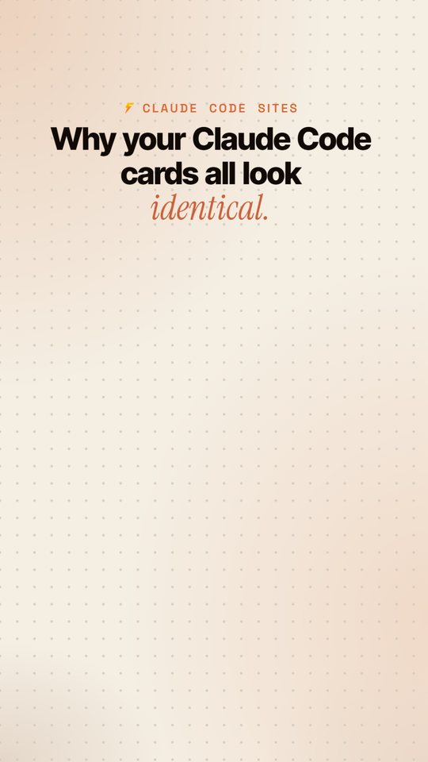
The hook: frame 0 shows the accent mark (the brand slot: the bolt, the tool's logo or an accent dot) where the kicker starts; the kicker words fade in one by one, then the headline builds word by word as spoken (3 frames per word) over 2 to 3 lines with one serif-italic phrase.
Frame match: pass, 6/6 checks, strip r 0.99. Energy (alone, 4 s): moving 0.0 percent of frames, middle band 0.0 percent, pixels changing 0.08 percent, longest still 4.33 s, static windows 3. Beat types: hook. File: compositions/headline.html
| prop | type | default | label |
|---|---|---|---|
kicker | string | "CLAUDE CODE SITES" | Kicker (ALL CAPS, 2 to 4 words) |
kicker_mark | string | "" | Kicker mark image (assets/..., the brand slot; empty = an accent dot) |
lines_json | string | "[\"Why your Claude Code\", \"cards all look\", \"*identical.*\"]" | Headline lines as a JSON array; the serif-italic phrase between asterisks |
words_json | string | "" | Spoken times of the headline words as JSON [{"w":"Why","t":0.05}, ...] (empty = 3 frames apart) |
kicker_at | number | 0.1 | Kicker starts (s) |
headline_at | number | 0.5 | Headline starts (s, used when words_json is empty) |
word_frames | number | 3 | Frames per word |
x | number | 90 | Left (px) |
w | number | 900 | Width (px) |
align | enum | "center" | Align |
hold | enum | "normal" | Hold level (a parallax rotation and a scale creep; the block stays in the safe zone) |
exit | enum | "none" | Exit |
exit_at | number | -1 | Exit at (s, -1 = never) |
Demo props: {"kicker_mark": "assets/brand/mark/mark-gradient.png"}
word at frame each word's time: no sound of its own (the hook set piece elsewhere takes hook_hit)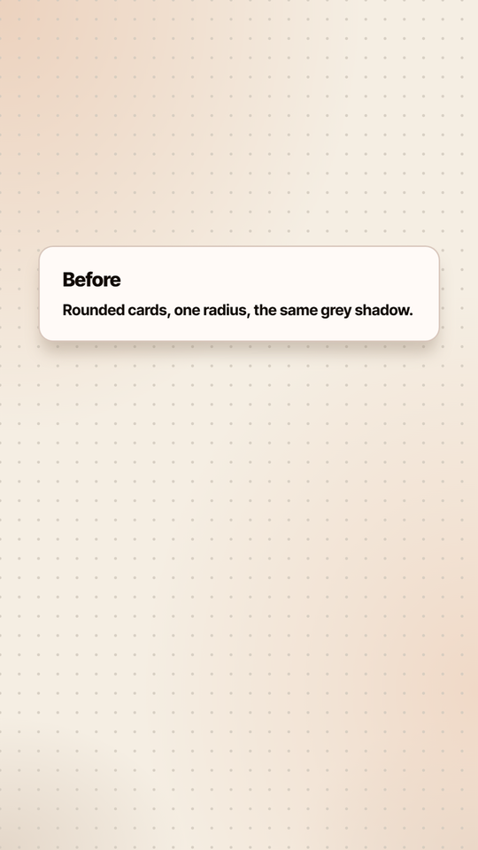
Clears a scene with motion: fall off the bottom over 10 frames ease-in tilting 2 degrees (the next card rises at once), push 6 frames out to the left then 2 empty frames and a 12-frame entrance, or the look refs' fade with blur over 4 frames. The same moves are the exit props of every component.
Frame match: pass, 10/10 checks, strip r 0.965. Energy (alone, 4 s): moving 8.5 percent of frames, middle band 10.0 percent, pixels changing 1.07 percent, longest still 3.17 s, static windows 0. Beat types: any. File: compositions/exit-move.html
| prop | type | default | label |
|---|---|---|---|
type | enum | "fall" | Exit |
x | number | 90 | Left (px) |
y | number | 560 | Top (px) |
w | number | 900 | Width (px) |
title | string | "Before" | Title of the leaving card |
body | string | "Rounded cards, one radius, the same grey shadow." | Body of the leaving card |
next_title | string | "After" | Title of the arriving card (empty = no next card) |
next_body | string | "One typeface with a point of view, and real color." | Body of the arriving card |
exit_at | number | 0.8 | The exit starts (s) |
fall_frames | number | 10 | Fall frames |
fall_tilt | number | 2 | Fall tilt (degrees) |
push_frames | number | 6 | Push-out frames |
gap_frames | number | 2 | Empty frames after the push |
in_frames | number | 12 | Entrance frames of the next card after a push |
blur_frames | number | 4 | Fade-blur frames |
hold | enum | "normal" | Hold level (the steady motion of both cards) |
Demo props: {}
scene_change at frame exit_at x 30: cue transition_fast or transition_slow by durationenter at frame after the exit: no sound of its own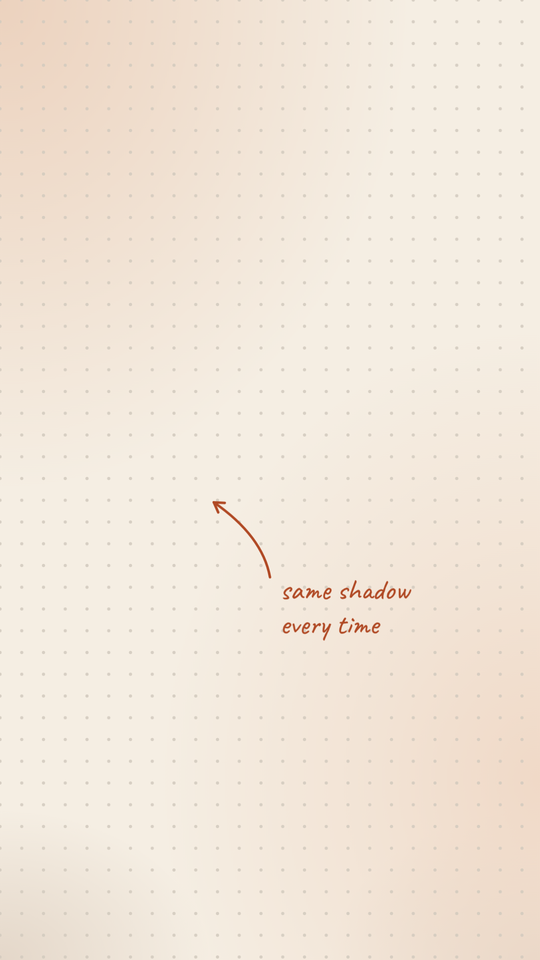
A hand-drawn aside in the script color with an arrow pointing at something: the text fades in over 6 frames and the arrow draws itself over 8.
Frame match: pass, 5/5 checks. Energy (alone, 4 s): moving 0.0 percent of frames, middle band 0.0 percent, pixels changing 0.02 percent, longest still 4.33 s, static windows 56. Beat types: stake, mechanism. File: compositions/handwritten-callout.html
| prop | type | default | label |
|---|---|---|---|
x | number | 560 | Left (px) |
y | number | 1150 | Top (px) |
text | string | "same shadow|every time" | The aside (1 or 2 short lines; a | breaks the line) |
arrow | enum | "up-left" | Arrow direction from the text |
arrow_len | number | 150 | Arrow length (px) |
text_frames | number | 6 | Text fade frames |
draw_frames | number | 8 | Arrow draw frames |
enter_at | number | 0 | Enter at (s) |
hold | enum | "normal" | Hold level (the steady motion after the entrance) |
exit | enum | "none" | Exit |
exit_at | number | -1 | Exit at (s, -1 = never) |
Demo props: {"enter_at": 0.3}
enter at frame 0: no sound of its owndraw at frame 4 for 10 frames: no sound of its own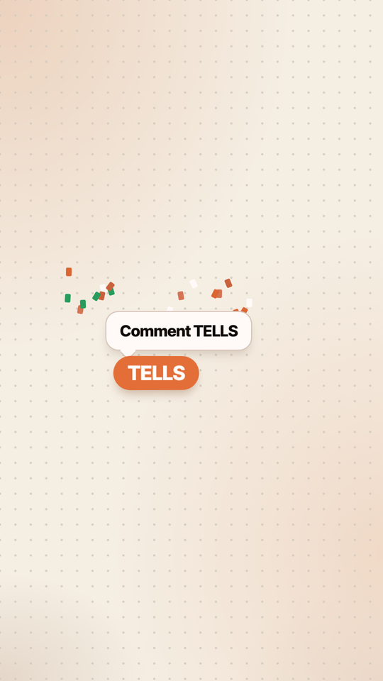
On the end card: the bubble scales from 0.5 to 1 over 7 frames with a 40 px overshoot in y settling over 9 more, a keyword pill pops under it, seeded confetti drifts down behind.
Frame match: pass, 9/9 checks, strip r 0.987. Energy (alone, 4 s): moving 3.8 percent of frames, middle band 20.0 percent, pixels changing 0.29 percent, longest still 3.87 s, static windows 0. Beat types: ask. File: compositions/speech-bubble.html
| prop | type | default | label |
|---|---|---|---|
x | number | 300 | Left (px) |
y | number | 880 | Top (px) |
text | string | "Comment TELLS" | The bubble text |
keyword | string | "" | A keyword pill popping under the bubble (empty = none) |
tail | enum | "bottom-left" | Tail corner |
bubble_frames | number | 7 | Bubble scale frames |
overshoot_y | number | 40 | Overshoot in y (px) |
settle_frames | number | 9 | Settle frames after the overshoot |
confetti | boolean | true | Confetti drifts down behind it |
confetti_count | number | 18 | Confetti pieces |
seed | number | 7 | Seed for the confetti |
enter_at | number | 0 | Enter at (s) |
hold | enum | "normal" | Hold level (the steady motion after the entrance) |
exit | enum | "none" | Exit |
exit_at | number | -1 | Exit at (s, -1 = never) |
Demo props: {"keyword": "TELLS", "enter_at": 0.3}
pop at frame 0: cue ui_clickconfetti at frame 0: no sound of its ownpop at frame 11: cue ui_click (the keyword pill, when set)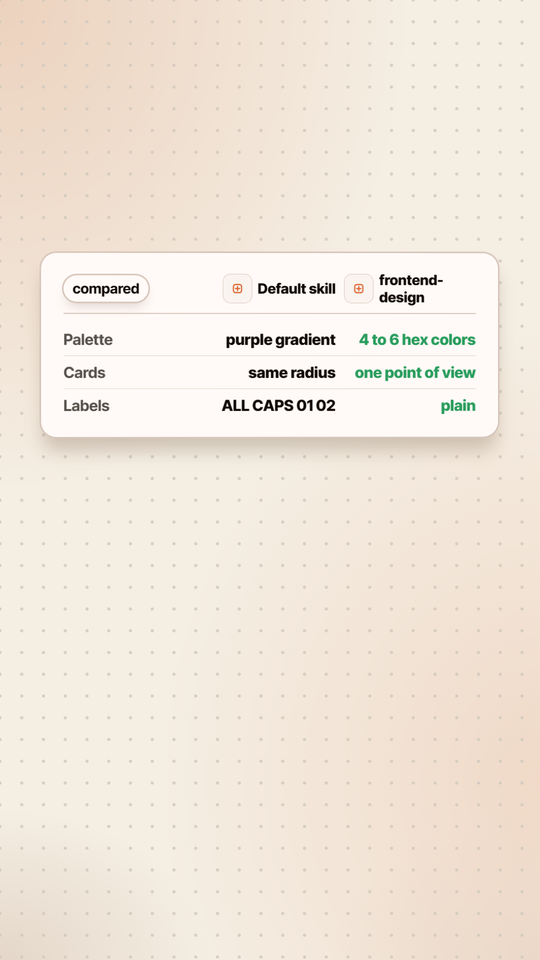
A comparison: a surface card with a logo row (image files) and a small pill, label and value rows with hairline dividers, values right-aligned, good values in success. Enters over 7 frames with a 28 px rise; rows follow 3 frames apart.
Frame match: pass, 10/10 checks, strip r 0.978. Energy (alone, 4 s): moving 7.7 percent of frames, middle band 13.1 percent, pixels changing 0.51 percent, longest still 3.9 s, static windows 0. Beat types: comparison, proof, before-after. File: compositions/table-card.html
| prop | type | default | label |
|---|---|---|---|
x | number | 90 | Left (px) |
y | number | 520 | Top (px) |
w | number | 900 | Width (px) |
title | string | "" | Title (optional) |
logos_json | string | "[{\"label\":\"Default skill\"},{\"label\":\"frontend-design\"}]" | Logo row as JSON: [{"image":"assets/...","label":"FlashFX"}, ...] (an empty image draws the neutral icon) |
pill | string | "compared" | Small pill next to the logo row (optional) |
rows_json | string | "[{\"label\":\"Palette\",\"values\":[\"purple gradient\",\"4 to 6 hex colors\"],\"good\":[false,true]},{\"label\":\"Cards\",\"values\":[\"same radius\",\"one point of view\"],\"good\":[false,true]},{\"label\":\"Labels\",\"values\":[\"ALL CAPS 01 02\",\"plain\"],\"good\":[false,true]}]" | Rows as JSON: [{"label":"Palette","values":["one purple","4 to 6 hex"],"good":[false,true]}] |
enter_frames | number | 7 | Entrance frames |
rise | number | 28 | Rise (px) |
row_gap_frames | number | 3 | Frames between rows |
enter_at | number | 0 | Enter at (s) |
honesty | enum | "none" | Honesty label |
hold | enum | "normal" | Hold level (the steady motion after the entrance) |
exit | enum | "none" | Exit |
exit_at | number | -1 | Exit at (s, -1 = never) |
Demo props: {}
enter at frame 0: cue hero_enterrow at frame 4 + 3 x i: no sound of its own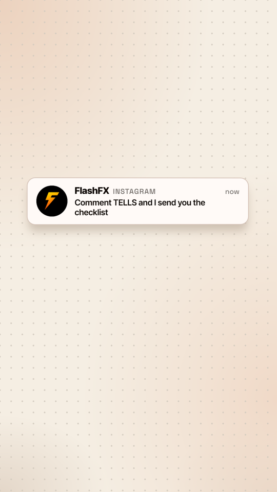
The CTA's DM notification in the style's look: a surface card with the round FlashFX avatar image (at least 112 px across), the sender name and one message line. Enters with the card move; its landing is the notification sound.
Frame match: pass, 7/7 checks, strip r 0.914. Energy (alone, 4 s): moving 5.4 percent of frames, middle band 12.3 percent, pixels changing 0.34 percent, longest still 3.97 s, static windows 0. Beat types: ask. File: compositions/dm-card.html
| prop | type | default | label |
|---|---|---|---|
x | number | 110 | Left (px) |
y | number | 1250 | Top (px) |
w | number | 860 | Width (px) |
avatar | string | "" | Round avatar image (assets/brand/mark/avatar-dark.png) |
avatar_size | number | 120 | Avatar diameter (px, at least 112) |
sender | string | "FlashFX" | Sender name |
message | string | "Comment TELLS and I send you the checklist" | One message line |
time_label | string | "now" | Time label |
app_label | string | "Instagram" | App label (small, grey) |
enter | enum | "rise" | Entrance |
enter_at | number | 0 | Enter at (s) |
hold | enum | "normal" | Hold level (the steady motion after the entrance) |
exit | enum | "none" | Exit |
exit_at | number | -1 | Exit at (s, -1 = never) |
Demo props: {"avatar": "assets/brand/mark/avatar-dark.png", "y": 700, "enter_at": 0.3}
enter at frame 0: no sound of its ownnotification at frame 8: cue notification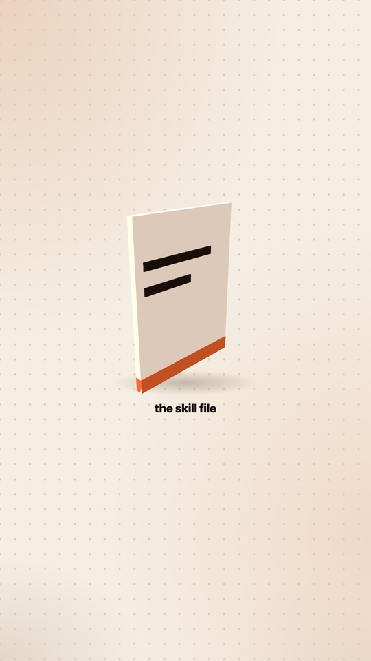
The one 3D component (hook and end card only, at most 2 objects): a low-poly card, box or icosahedron turning under a warm key light, drawn from the hf-seek time, with a soft contact shadow; scales in with a back-out over 12 frames. Needs the clip_start prop (its data-start). Without WebGL it shows a flat card and reports data-webgl=0.
Frame match: pass, 5/5 checks. Energy (alone, 4 s): moving 3.8 percent of frames, middle band 14.6 percent, pixels changing 0.4 percent, longest still 3.93 s, static windows 0. Beat types: hook. File: compositions/hero-3d.html
| prop | type | default | label |
|---|---|---|---|
x | number | 240 | Left of the 3D area (px) |
y | number | 560 | Top of the 3D area (px) |
w | number | 600 | Width (px) |
h | number | 600 | Height (px) |
object | enum | "card" | The hero object (low poly, one object) |
spin | number | 40 | Spin (degrees per second) |
tilt | number | 18 | Tilt (degrees) |
enter_at | number | 0 | Enter at (s, local) |
enter_frames | number | 12 | Entrance frames (scale up with a back-out) |
clip_start | number | 0 | The data-start of this clip in the root (s): hf-seek times are root times |
label | string | "" | A label under the object (optional) |
hold | enum | "normal" | Hold level (the shadow and the label) |
exit | enum | "none" | Exit |
exit_at | number | -1 | Exit at (s, local; -1 = never) |
Demo props: {"label": "the skill file", "enter_at": 0.2}
enter at frame enter_at x 30: cue hook_hit (when it is the hook's set piece)land at frame enter_at x 30 + 12: no sound of its own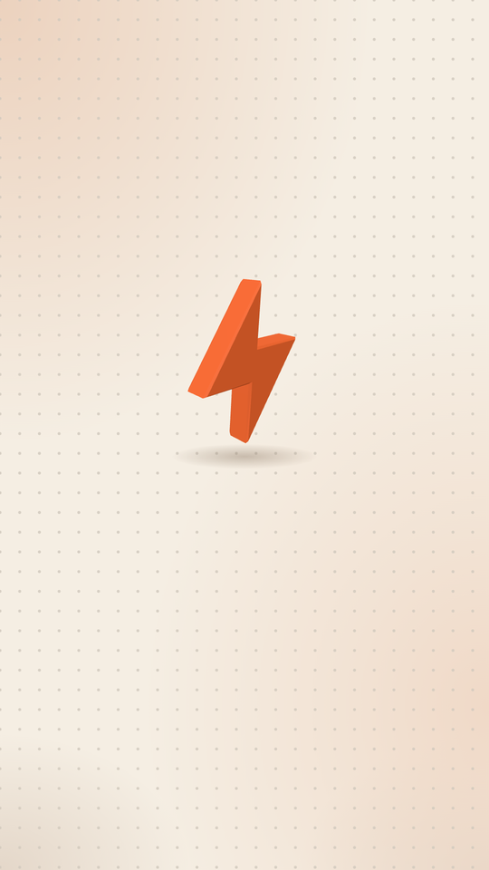
A low-poly 3D icon turning slowly at the center of a scene (Motion and energy rules E6): a Three.js extrusion of an SVG path (bolt, star, play, check, cursor, heart) or a primitive (a rounded slab, a torus, a low-poly sphere) in a palette color, drawn from the hf-seek time on the WebGL backend of motion-lib/webgl.json, with a CSS-extruded fallback (the SVG in 8 to 16 depth layers under a turning stage) when WebGL is missing or mode is css. Needs the clip_start prop (its data-start). Never a logo. The style allows 3D objects in the hook and the end card (tweaks.md 3D).
Frame match: pass, 4/4 checks. Energy (alone, 4 s): moving 0.0 percent of frames, middle band 3.8 percent, pixels changing 0.09 percent, longest still 4.33 s, static windows 0. Beat types: hook, ask. File: compositions/icon-3d.html
| prop | type | default | label |
|---|---|---|---|
x | number | 290 | Left of the 3D area (px) |
y | number | 560 | Top of the 3D area (px) |
w | number | 500 | Width (px) |
h | number | 500 | Height (px) |
icon | enum | "bolt" | The icon (an extruded shape built in code) |
color | enum | "accent" | Color |
mode | enum | "auto" | Renderer |
spin | number | 24 | Turn (degrees per second, slow) |
tilt | number | 14 | Tilt (degrees) |
depth | number | 3.2 | Extrusion depth (px at the icon box of 24 units: 2 to 6) |
layers | number | 12 | Depth layers of the CSS fallback (8 to 16) |
enter_at | number | 0 | Enter at (s, local) |
enter_frames | number | 12 | Entrance frames (scale up with a back-out) |
clip_start | number | 0 | The data-start of this clip in the root (s): hf-seek times are root times |
label | string | "" | A label under the icon (optional) |
hold | enum | "normal" | Hold level (the shadow and the label) |
exit | enum | "none" | Exit |
exit_at | number | -1 | Exit at (s, local; -1 = never) |
Demo props: {"icon": "bolt", "enter_at": 0.2}
enter at frame enter_at x 30: cue hook_hit (when it is the hook's set piece)land at frame enter_at x 30 + 12: no sound of its own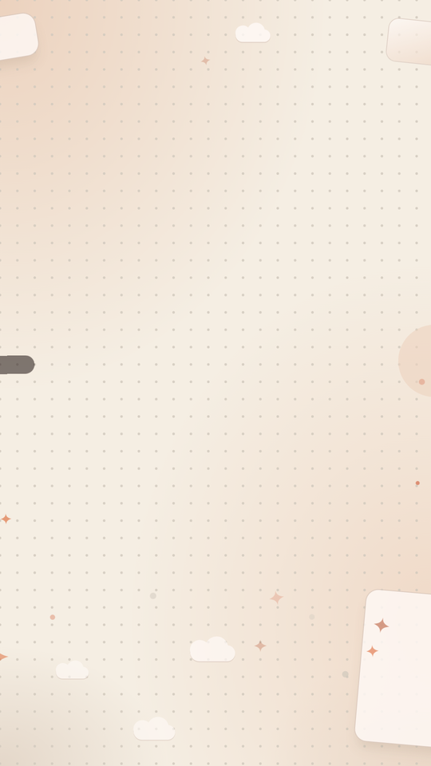
The background of every reel: paper, a warm glow top left, a warm glow lower right, darker bottom corners, a dot grid, and from M14 the life of Motion and energy rules E5 and E7: an edge filler layer (soft cards, chips, thumbnails, shapes and stars 30 to 70 percent outside the left and right borders, at most 20 px per second, no text) and an ambient layer (stars, dots and small clouds drifting and twinkling), both seeded per reel (the seed and duration props) and kept out of every text zone. Mounted for the whole reel at z 0.
Frame match: pass, 10/10 checks. Energy (alone, 4 s): moving 0.0 percent of frames, middle band 0.0 percent, pixels changing 0.01 percent, longest still 4.33 s, static windows 0. Beat types: any. File: compositions/paper-canvas.html
| prop | type | default | label |
|---|---|---|---|
dots | boolean | true | Dot grid |
layers | boolean | true | The edge filler and the ambient layer (Motion and energy rules E5, E7) |
seed | number | 1 | Seed per reel (the layers are laid out from it) |
duration | number | 90 | How long the reel runs (s): the layers drift for this long |
edges | number | 6 | Edge elements (3 per side) |
ambient | number | 16 | Ambient elements (stars, dots, clouds) |
Demo props: {"seed": 7, "duration": 90}